Selamat Datang di GunungKidul
HANDAYANI
Artikel
Berikut adalah beberapa tempat wisata menarik:

Goa Pindul: Petualangan Sungai Bawah Tanah
Goa Pindul dikenal luas sebagai destinasi yang menawarkan pengalaman cave tubing yang unik, di mana pengunjung menyusuri sungai bawah tanah menggunakan ban pelampung. Aktivitas ini, yang sering dibandingkan dengan rafting namun dengan arus air yang lebih tenang, sangat cocok untuk pemula bahkan anak-anak, menjadikannya petualangan yang sangat mudah diakses. Perjalanan ini biasanya memakan waktu sekitar 45 hingga 60 menit, melintasi sungai sepanjang kurang lebih 350 meter di dalam gua.
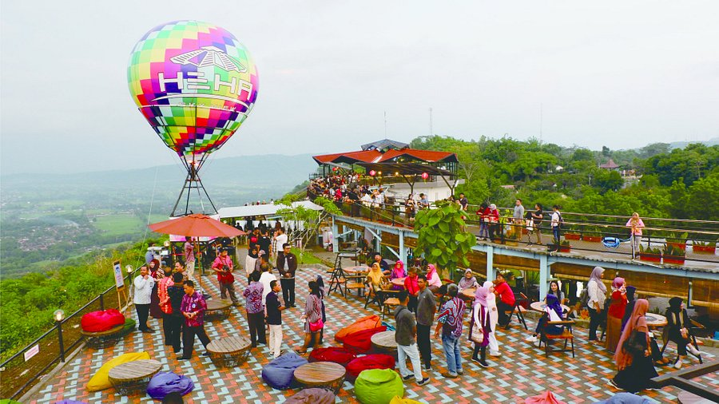
HeHa Sky View: Panorama dan Rekreasi di Ketinggian
HeHa Sky View terletak pada pemandangan panoramanya yang memukau dari lanskap Gunung Kidul, meliputi perbukitan hijau dan lembah yang luas. Momen yang paling dinanti oleh banyak pengunjung adalah matahari terbenam, di mana cahaya senja yang merayap di atas perbukitan dan lembah menciptakan pemandangan yang tak terlupakan. Keindahan pemandangan ini juga didukung oleh keberadaan gondola yang mengantarkan pengunjung ke puncak bukit untuk menikmati panorama alam yang menakjubkan.
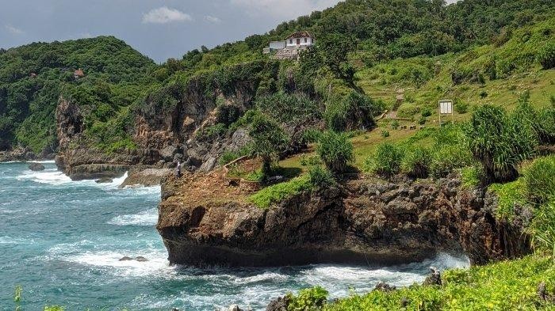
Tanjung Kesirat: Pesona Tebing Pantai yang Tenang
Tanjung Kesirat menawarkan lanskap unik berupa deretan tebing karang istimewa yang menjorok ke laut, bukan hamparan pasir. Terkenal dengan pohon tunggal ikoniknya, tempat ini menyuguhkan pemandangan laut selatan yang menenangkan dan panorama sunset yang luar biasa dari ketinggian. Keindahan alam yang memukau dan pemandangan laut yang menakjubkan menjadikan Tanjung Kesirat populer di kalangan pecinta fotografi dan wisata alam.
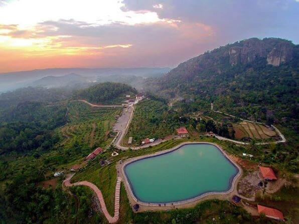
Embung Nglanggeran: Danau dengan Pesona Indah
Embung Nglanggeran adalah lokasinya yang tidak biasa di puncak bukit di dalam area Gunung Api Purba Nglanggeran, menawarkan pemandangan panorama yang luas dan fantastis berupa perbukitan, sawah, dan pegunungan di kejauhan. Air embung itu sendiri berwarna hijau toska yang mencolok, sebuah fenomena alami yang disebabkan oleh pantulan sinar matahari dan pertumbuhan alga alami. Embung ini juga dikelilingi oleh lebih dari 18 hektar kebun buah yang dikelola oleh masyarakat setempat, di mana pengunjung dapat membeli hasil panen segar selama musim panen.Galeri
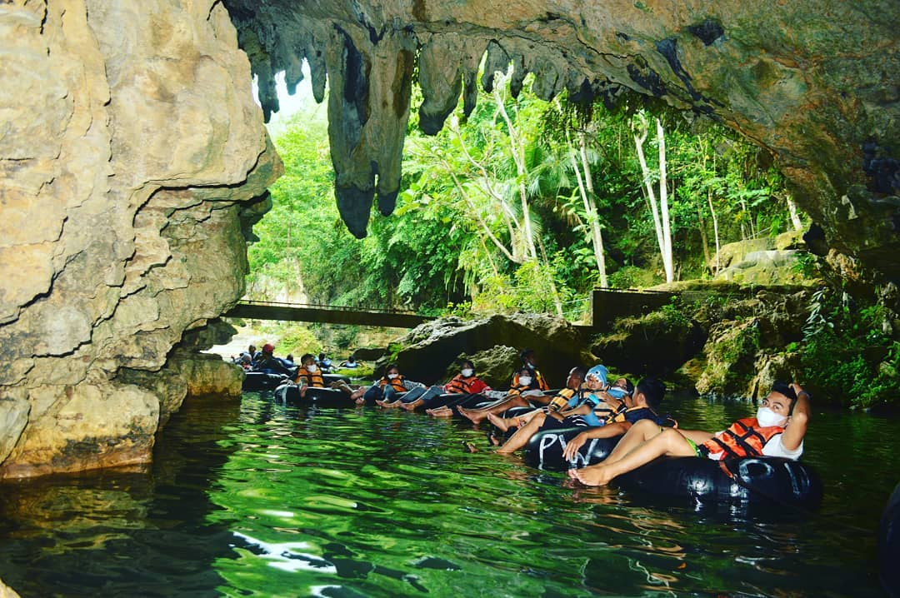
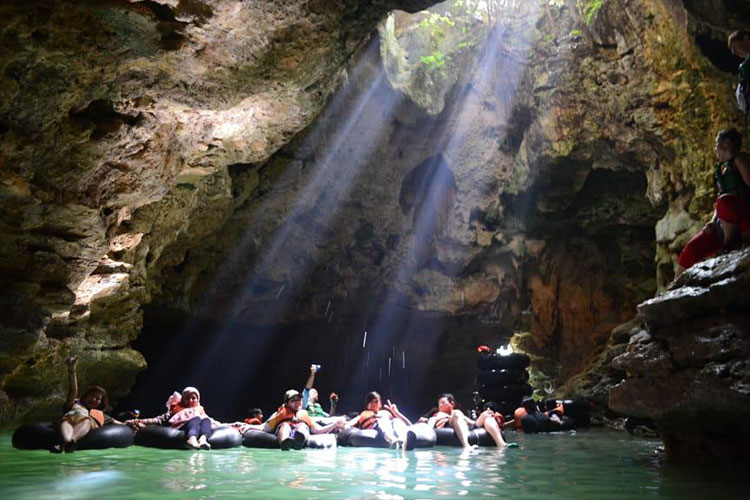
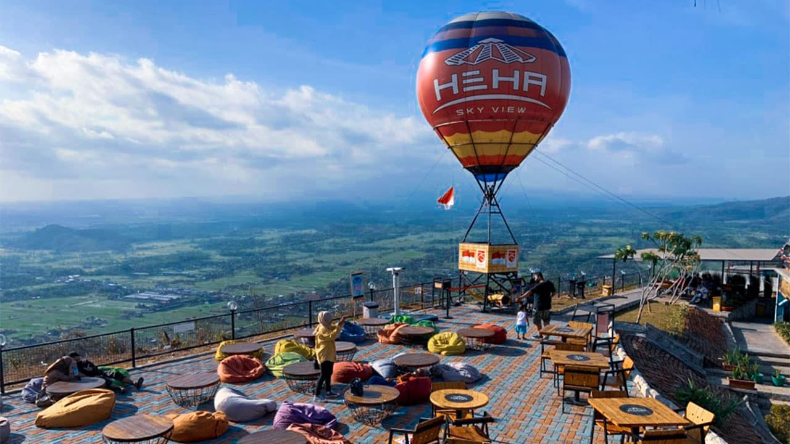
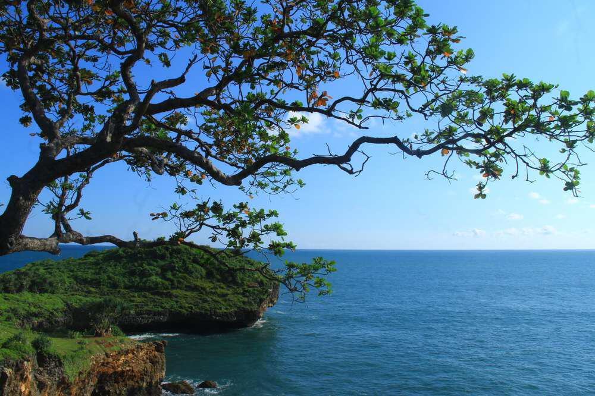
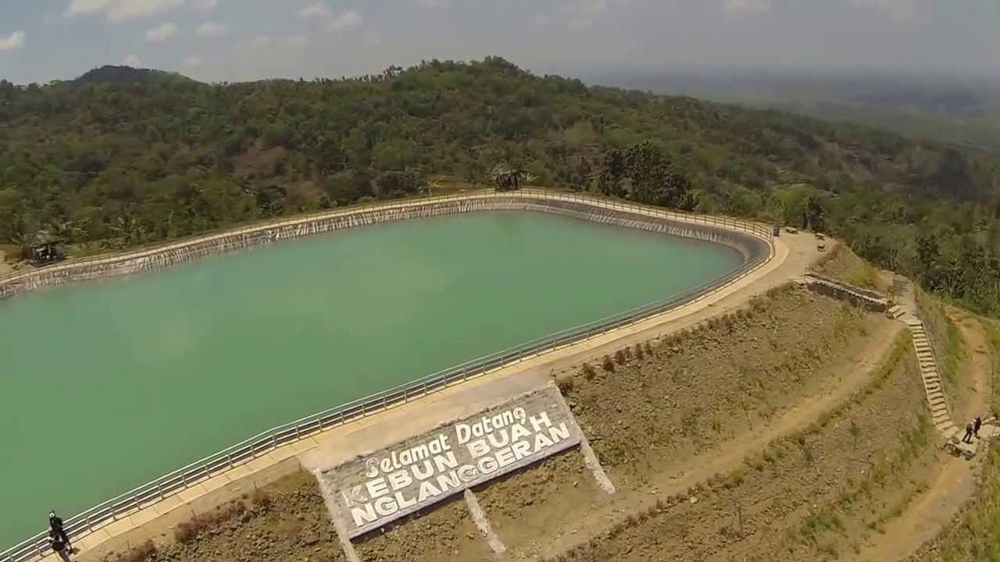
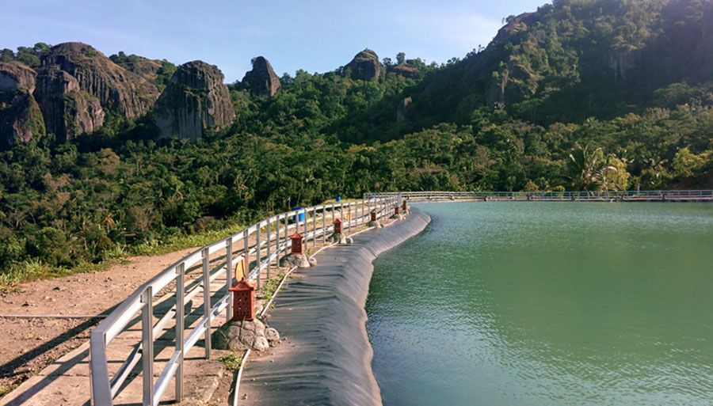
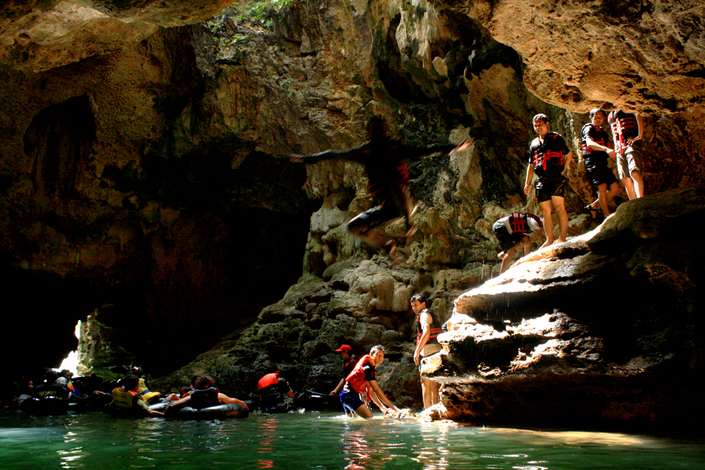
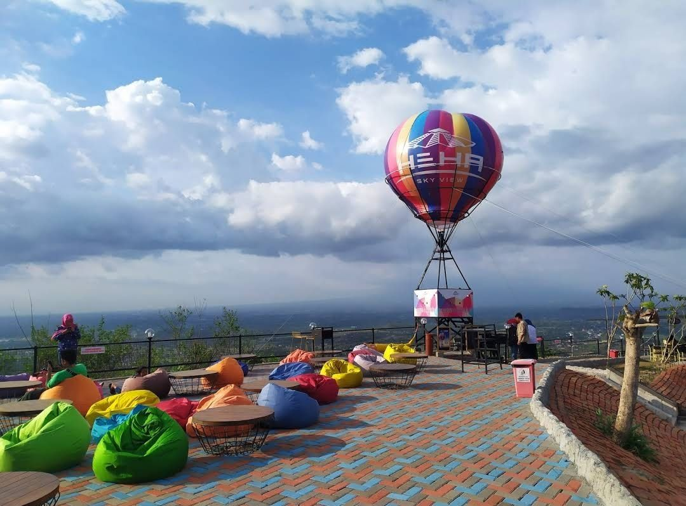
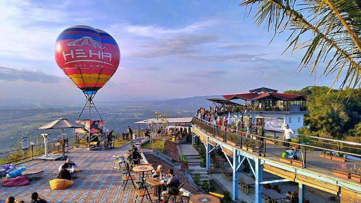
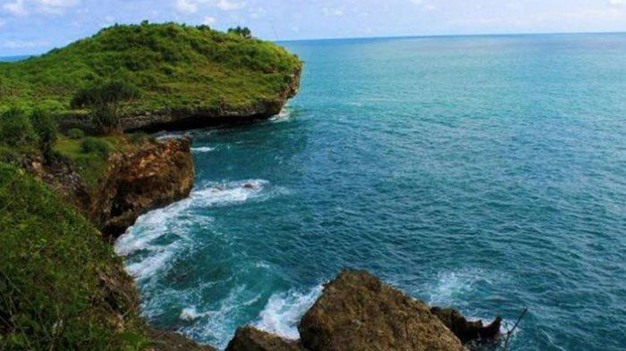
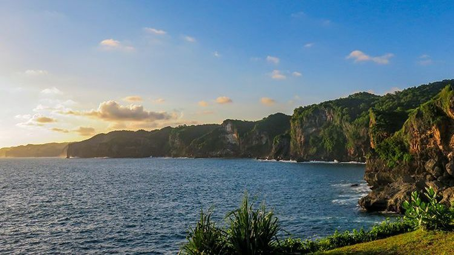
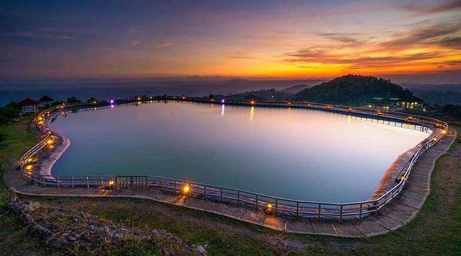
Buku Tamu
Silakan tinggalkan pesan dan terima kasih telah berkunjung. (^з^)-☆Chu!!